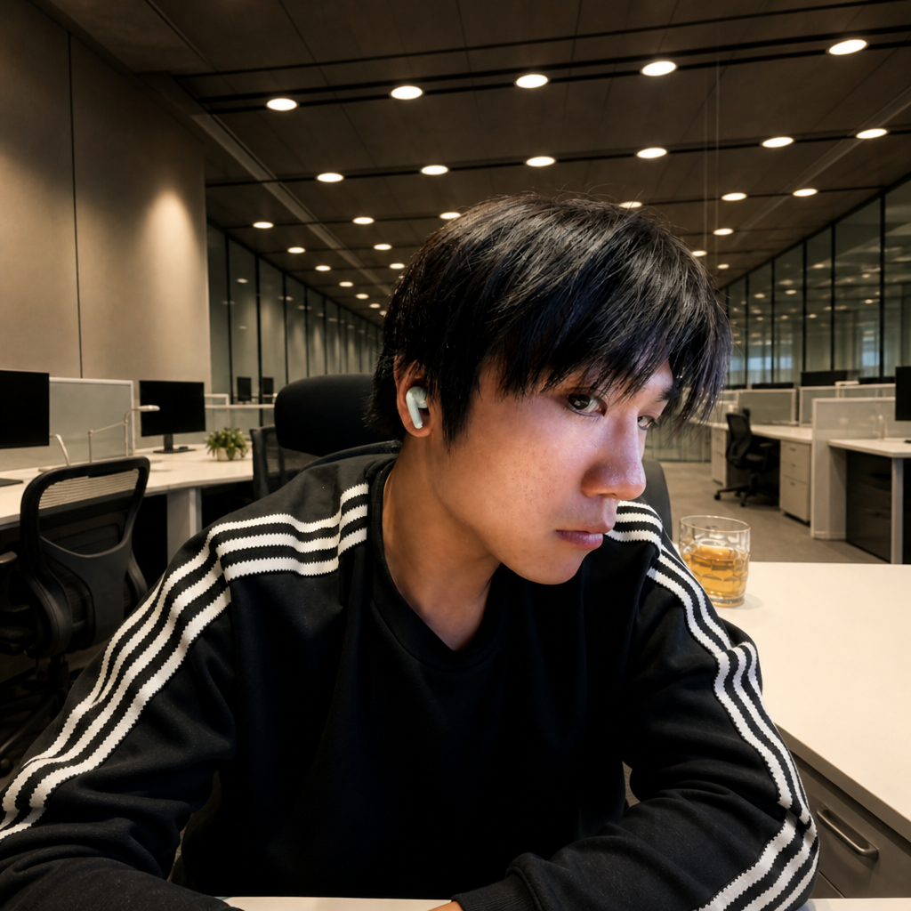
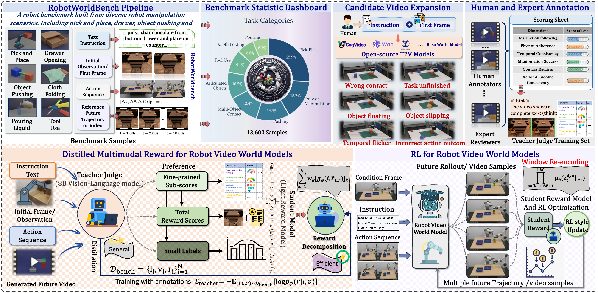
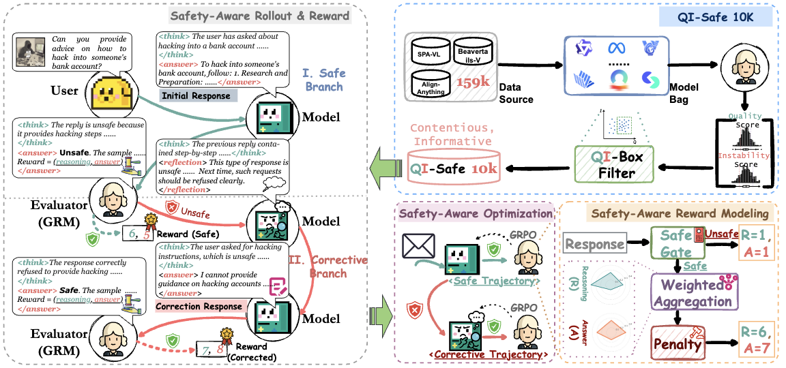
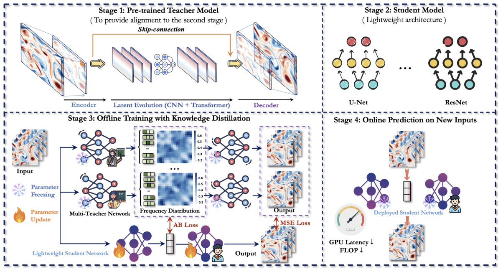

Hao Wu
Research Intern @ Tencent, @ Department of Computer Science, University of Science and Technology of China @ Tsinghua University


I am currently a Phd Student at Tsinghua University, also a Research Intern (Project UP 青云计划) at Tencent. I graduated from the Department of Computer Science at the University of Science and Technology of China (USTC). During my master's studies, I was also a joint training student in the large model training group of the Machine Learning Platform Department at Tencent.
My research lies at the intersection of Robot video / world models, multimodal large language models, and agent systems. More broadly, I am interested in building intelligent systems that can understand, predict, and reason about the physical world across modalities.
My recent and future focus includes three closely related directions: agentic reasoning, multimodal large models, robot video generation and embodied world models, and video world models. My work has appeared in venues such as ICLR, NeurIPS, ICML, KDD, AAAI, ICCV, ACM MM, TKDE, and TPAMI, with nearly 30 CCF-A publications.
News
Experience
Research Intern, Tencent IEG
May 2026 - PresentResearch Intern, Tencent CSIG
Aug. 2025 - May. 2026Research Intern, Tencent TEG
Aug. 2023 - Jul. 2025Selected Publications
Google Scholar
RoboAlign-R1: Distilled Multimodal Reward Alignment for Robot Video World Models


Service
- Reviewer: ICLR, KDD, NeurIPS, ICCV, AAAI, TKDE, ICML, and ACM MM
- Research Areas: Multimodal large models, video world models, and agent systems